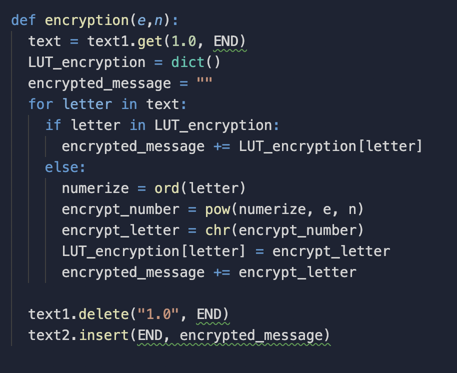
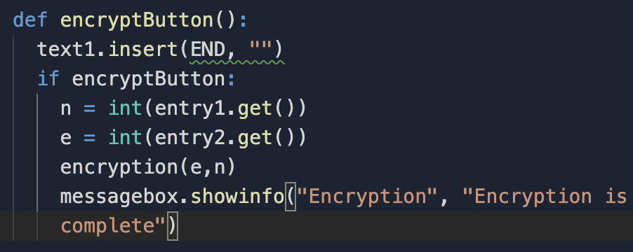

Questions 3A
The overall purpose of the program is to encrypt and decrypt messages. The functionality of this program that is demonstrated in the video is that you input your n,e, and d values and then you would type in your message that you want to decrypt. Then you press the encrypt the message using the button and then press the decrypt button if you want to decrypt the message. The input and output demonstrated in the video is the inputted n,e and d values and another input is the message that you want to send and the output is the encrypted message, another example of the output is the decrypted message after pushing the button.
Question I 
Question II 
Question III The procedure that was in question I and II what they contribute to the overall functionality of the program is that they call the n and e values and turn the imputed message into unreadable text.
Question IV The text is inserted into the text box and if the encrypt button is pressed call the n and e values that are in the entry boxes and then call the encryption function that transforms the text into the random text using ord(), pow(), and chr() and then inserting it into the text box.